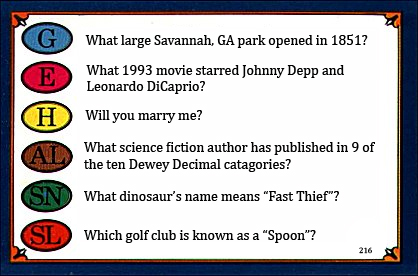
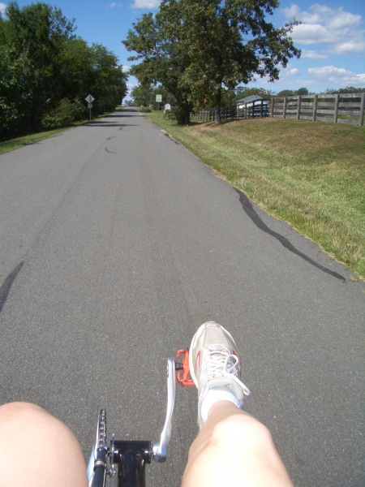
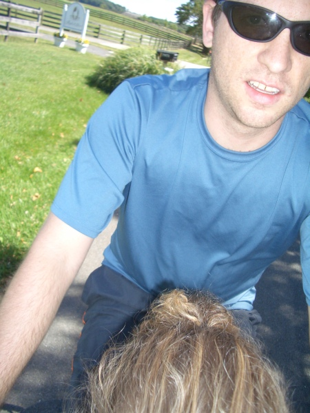
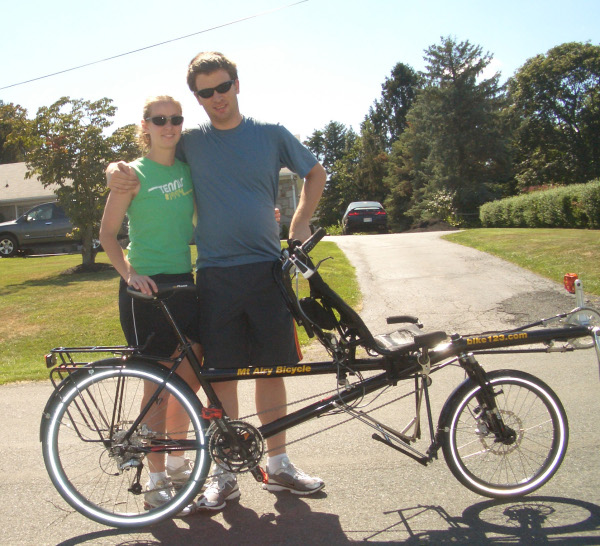

Tuesday, August 26, 2008
That's right...WE'RE ENGAGED! And the wedding and the bicycle trip honeymoon and everything else we've been casually planning and discussing here are officially happening. :-)
Kyle proposed on Saturday August 23rd (which happened to be a day after our 5.5 year anniversary). Everyone who hears the good news asks to see the ring and hear the proposal story, and since I'm such a fan of both I'm always willing to share. Here is the story of that weekend with random details, color photos, and only a bit of girly gushing.

On Friday Kyle and his best friend Dave came to Charlottesville for what promised to be an enjoyable weekend (even before the proposal happened). Dave never visits without his RockBand video game, and we jammed throughout the weekend with the help of my housemates. Kyle and I also had fun with Dave's car, a huge Charger named "Zeus." Dave admits that the gas-guzzling beast is more of a boat than a car, so Kyle and I decided that the full-sized boat bumper I found at a local antique warehouse would look perfect attached to its portbow.  Dave was quite amused when he discovered our "gift"; plus it protected Zeus from the dangers of my narrow street. I had no idea that Dave would soon assist with Kyle's much bigger surprise for me...
Dave was quite amused when he discovered our "gift"; plus it protected Zeus from the dangers of my narrow street. I had no idea that Dave would soon assist with Kyle's much bigger surprise for me...
On Saturday night the three of us went out to Sal’s Italian cafe for dinner. Suddenly Dave “got a call from work” and had to leave right away to access his laptop back at the house. Kyle maintains that Dave’s acting was terrible, but I completely fell for the story. I noticed that Kyle looked a bit off at that point, but he blamed his nerves on overprotective car ownership – Dave, who can’t really drive stick, was allegedly taking Kyle’s manual car back to the house. (Yup, I fell for that one too.)
Kyle and I used our unexpected alone time to take a walk through the downtown mall, and stopped by the ice rink to watch some decidedly mediocre hockey. Kyle eventually had to drag me away – mediocre or not, I love to watch sports – and we continued our walk in the direction of Court Square. We reached the park where unbeknownst to me Kyle planned to propose. I got distracted again though, this time by an impressive statue of Stonewall Jackson. It probably tortured Kyle when I stopped to take photos for my brother (he’s a big fan – long story) but we finally made it over to a bench. Underneath it were three Trivial Pursuit cards (planted by Dave a few minutes before)… which leads me to a necessary back story…
On the ultimate frisbee team’s trip to Georgia my freshman year Kyle and I took a number of walk&talks that really solidified our very new relationship. On one of them we happened upon a number of Trivial Pursuit cards scattered across the sidewalk. We couldn’t figure out how they got there, though my favorite theory was that an overly competitive kid had tossed the game out of a nearby house after losing. That night we interspersed our conversation with questions off of the cards and, being a romantic packrat, I kept one of them in my wallet to remember our evening walks through Tybee Island. Kyle had no idea that I still carry the card, by the way, he's just good at remembering random moments and inside jokes (a rare skill in the male population).

The cards underneath the bench Saturday night had suspiciously familiar questions and answers. For example, “What 1987 hit single was song of the year in the UK?” (Answer: Never Gonna Give You Up; Kyle and I always appreciate a good RickRoll); “What 80s band sometimes pretended to be a Christian Rock group called Dove?” (Devo, Kyle’s frisbee nickname); and “What dinosaur’s name means ‘Fast Thief’?” (the velociraptor, about which Kyle and I have something of an obsession). But the most important question was in the history category on the second card: “Will you marry me?” The answer spot on the flipside of the card was blank, but as Kyle got down on one knee and repeated the question I gave an enthusiastic and overwhelmed “yes.” He slipped an absolutely stunning ring on my finger and soon after Dave emerged from the nearby bushes (or from just around the corner) to congratulate us.
I can't fully describe how I felt that night, or how I still feel whenever I think about being engaged to Kyle. I honestly couldn’t ask for a better ring, proposal, or fiancé. I’m still grinning with disbelief at how lucky and happy I am, and I don't expect the euphoria to fade anytime soon.


 | posted at: 08:42 |
permanent link and comments
| posted at: 08:42 |
permanent link and comments
Thursday, August 14, 2008
I didn't expect to be posting again so soon, but I wanted to share a recent training experience.
On my Tuesday ride I took a new but familiar route - the road I drove every week for summer league frisbee but never attempted on a bicycle. Route 20 South looks briefly like a main road but quickly winds into wooded back country where all you can see are trees and farms. To give you a better idea: one week I had to visit the area post office (which was in the middle of nowhere and took me several tries to find) and when I asked the woman behind the counter for the nearest public bathroom she had no suggestions and explained, with a chuckle at my city ways, that "We don't have anything like a McDonalds out here." I discovered the answer to my question later: 15 miles away there's a gas station, but it closes at 7pm. Beyond that you're pretty much screwed.
The bike ride was going well until my chain jumped off, which is when I realized that I wasn't sure how to put it back. I knew it was a fairly simple process, and I knew Kyle had demonstrated it at some point, possibly several times, but I just couldn't figure it out. I called Kyle and was about to have him talk me through the process when a car pulled over and asked if I needed help. It was a middle aged couple with mountain bikes on the back of their jeep, and when I explained my somewhat embarrassing issue one of them jumped out to assist. He was very confused about how the chain managed to get on the wrong side of the pedal; I neglected to mention that I moved it in my uneducated repair attempts and instead gave him an "oh the unsolved mysteries of the cycling universe" shrug. He was extremely helpful and nice, and even suggested a great bike route nearby. He fixed the chain in less than a minute and assured me that I'd be able to do it myself next time.
Well, lucky me, I got to practice my newly aquired skill about 10 miles later when my chain came off again. Luckily it was indeed as easy as it looked. A truck slowed to see if I needed help, but I was able to wave him off with an "I'm good; I just had to fix the chain. Thanks though!" It's always nice to meet friendly motorists to compensate for the reckless, ignorant, and honking ones. Now I just have to figure out why my chain is being so difficult; I assume it has to do with my rough shifting style, but in the past that has only been a problem on large uphills.
Fingers covered in grease, I rode on. At one point I pressed a button on my bike computer and coated it with grease. Without thinking I tried to wipe off the screen and ended up dislodging it from the bike. I hit the breaks and watched the computer bounce down the road, expecting it to end up in the woods or plastered to a car wheel. I was able to rescue it though; the casing got a bit cracked but I was relieved to see that everything still functioned properly. I didn't need any more mechanical problems, or bad omens - the last time I busted a bike computer I was attacked by dogs a few minutes later. (This was several years ago but I still have a big scar on my ankle to remind me that I hate dogs in motion.)
Fortunately the rest of the ride was uneventful. Better than that - it was amazing. I rode farther and faster than I have since I began training this month - almost 30 miles at a 15.27 mph pace. That probably doesn't sound impressive, but I think we can tell by my bike mechanic skills that I'm an amateur, and I consider it a good start. Most importantly, I really, really enjoyed the ride. Despite the setbacks and the hills and the heat it felt really good. I rode again today with an added hill workout and still loved every moment on the bike. Contrary to most of my expectations, cycling is addicting me already.
| posted at: 20:32 |
permanent link and comments
Monday, August 11, 2008
The tandem bicycle that Kyle and I ride across the country will serve as our only means of transportation, our (very light) suitcase, and our home during the day, every day, for almost two months. It's also a serious investment - it will be one of our most expensive belongings and will hopefully last well beyond the trip. It's not a purchase to be taken lightly, so Kyle and I started researching our options months ago. But when Kyle found the Hase Pino online we were fairly sure that our search was over. The Pino is a tandem bike with a recumbent seat in the front and a regular saddle behind it. All steering and shifting are done by the "captain" in the back. This stadium seating effect improves visibility and communication, and allows riders to switch between an upright saddle and a reclined seat when things are getting monotonous, sore, or both. Check out snazzy photos at the company website
Since the Pino doesn't look like a normal bike, we could hardly expect it to ride like a normal bike, and we had no plans to spend thousands of dollars without being sure that the Pino was for us. As you might imagine, only a few shops regularly carry the Hase Pino; luckily one of them is within an hour of Kyle's house.
We rolled into the Mt. Airy bike shop Saturday afternoon and were stunned by the number of bikes lining the parking lot and lawn. After wandering the packed shop we asked for a spin on their only Pino. A young grease monkey slapped on some bright orange petals as the salesman explained the basic mechanics of the bike and directed us to a one mile loop through the nearby countryside. I made Kyle captain us first, which meant I sat in the front while he managed a very awkward zig-zagging start. Possessing minimal understanding of basic mechanics, I thought tandem bikes allowed riders to shift separately and pedal at different speeds. Not so. We had to pedal together, and I realized the hard way that if the captain unexpectedly shifts or changes cadence it makes matters difficult for the rider in front. (Thank goodness the bike allows us to communicate well.) Being in front is amazing though; it really offers a new perspective on the world whizzing by, and as a bonus your hands are free to snap photos (even an overhead candid of the captain). Pedaling is slightly harder in the front since you're pushing out instead of down and can never stand, but being able to recline in a comfortable seat and ignore steering and shifting concerns can trick you into feeling like a relaxed rickshaw passenger.
 
Halfway around the loop Kyle and I switched positions. I had asked/forced Kyle to captain as we left the shop (and when we returned to it) because I assumed captaining would go poorly for me, and I had no intention of embarrassing myself in front of a crowd. It turns out I was right, and may have even underestimated my Pino incompetence. My time as captain began with a dozen or more false starts. I couldn't seem to begin pedaling without turning the handlebars slightly, and on an extra-long bicycle a slight turn means disaster for the bike's stability and bruising for Kyle's shins. Eventually - with a lower seat and gear and a lot of coaching from Kyle - I was able to get going and even navigate a turn and a small hill. I still terrified myself and Kyle by trying to figure out the shifting without actually looking at the mechanism (I refused to take my eyes off of the road ahead) but once I got the hang of it captaining was exhilarating. It was also completely bizarre; I didn't realize how much steering from the back would throw me off. I suppose it's akin to pushing an oversized stroller while on roller blades, except that you're tied to the stroller, everything is heavier, and the toddler yells whenever you shift up.
I haven't been shy about voicing my concerns about our cross country ride, and testing the Pino has added a few worries to the list. First there's the linked pedal strokes. Kyle and I have very different riding styles. I frequently sprint on flats, on slight downhills, and whenever I have a burst of energy and motivation (because I expect to quickly lose it). Kyle has more mental endurance - mostly because he enjoys cycling more - and more experience, so he rides more consistently and strategically, saving energy for climbs and taking downhills at high (some would say reckless) speeds. On our rides together I match or outpace him...until we hit a hill and he blows past me. Even when we're riding at the same speed Kyle maintains a constant and quick cadence on a lower gear while I prefer powering through strokes at a higher one. Basically Kyle has better traditional form and I do whatever random moves work for me. But hey, I also have ugly form when I shoot a basketball or lay out for a disc, and I'm fairly successful at both. Unfortunately our differences are problematic on a tandem; I honestly doubt my legs can move fast enough to match his normal cadence, and while captaining I kept shifting higher than he could comfortably handle. We'll be in a better position if I learn to pace like Kyle and if he improves his performance on flats, but we're never going to have the same cycling style. Marriage is about compromise though, right?...
Marriage is also supposed to be about communication and trust, and our ability to do both will be tested on this ride. I could tell Kyle found it hard to have me captain, and not just because I was so inept and terrified. The recumbent rider has to relinquish all control, and that can be difficult for someone who has more experience and is used to leading. Tandem bicycling opens the door for frustrating backseat - or in this case frontseat - driving. But - and here's the good news - our chaotic country mile showed me that Kyle and I possess more patience and persistence than I expected. I failed to start the bike again and again, but Kyle never got angry and I never had the urge to throw the bike into a ditch. In its own way it was a beautiful moment that bodes well for the future.
So despite raising several concerns, trying the tandem was exhilarating and made me look forward to spending more time on it with Kyle. We may even be able to rent the Pino for an upcoming charity ride. It's still early in the game, but I really do look forward to the insane, difficult, but amazing ride(s) to come.

| posted at: 16:22 |
permanent link and comments